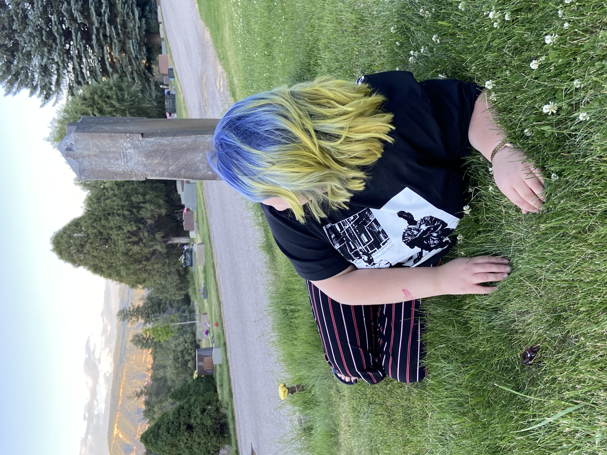

About Lex

Hi, I’m Lex! I’m a self-taught baker turned pastry pro with a serious love for tres leches, cheesecake, and anything with berries. What started as a weekend hobby in my tiny kitchen turned into a full-blown obsession with crafting sweets that bring people together.
After training at SJC and winning my local bake-off, I knew this was more than a passion — it’s my calling. Now, I run a pop-up bakery in Farmington, and I’m dreaming up even bigger things, like a mobile bakery truck and a cozy café of my own.
I believe that in order to make treats filled with sweetness, you have to give sweetness, so that's what I try to do. I love spending time with my family and friends and my pets. After getting further into my mortuary science degree, I can see how short life really is and that's why I intend to live mine with as much sweetness as possible.
A few years ago, I lost my grandma and ever since then, I have had this undying drive to make her proud. She's actually the inspiration for my baking company's name, 5275. She taught me to create and express myself with honesty and greatness, two main values of my business and the way I live. ✨